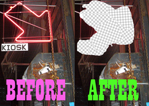

Thank you America!
November 5, 2008 by mimecine
JUST THANK YOU! Can you hear me? THANK YOU!!!!!!! !!!!!!!!!!!! !!!!!!!!!!!! !!!!!!!!!!!! !!!!!!!!!!!! !!!!!!!!!!!! !!!!!!!!!!!!
- Comments closed
November 5, 2008 by mimecine
JUST THANK YOU! Can you hear me? THANK YOU!!!!!!! !!!!!!!!!!!! !!!!!!!!!!!! !!!!!!!!!!!! !!!!!!!!!!!! !!!!!!!!!!!! !!!!!!!!!!!!
- Comments closed
November 1, 2008 by mimecine
Next Mini, number 6, is Lauren and Constantin Boym who put together an exhibition of 21 Soviet things that they will show here at KIOSK November 7th to the 16th. Opening party on the 7th 7-9pm.
These are things that you likely have never seen and many of which never made it out of the Communist State alive. Long forgotten in their homeland, they are simply amazing and beautiful: the essence of KIOSK and the everyday object.
Constantin on the subject says:
“Soviet consumer products always reminded me of weeds. Cheap, often indestructible, notorious for their clunky robust look, they proliferated in great numbers at all levels of Soviet society. Like the Soviet State itself, it seemed they were destined to live forever. Once Russia turned capitalist in the early 1990s, it was only a matter of time before “the weeds” got cleared out. Presently, most products in this show are extinct, or at least endangered; perhaps they still could be found on flea markets, far in the provinces. We picked them at random during our early visits to Russia, driven, in part, by collectors’ instinct, in part – by a desire to amuse our American design colleagues. Today, these products may still amuse someone, but their unpretentious simplicity can also teach us a few design lessons. Eventually, they will pass into the realm of historical artifacts. As years go by, they remain material witnesses to a very strange way of life, my life back in the USSR.”
For some nice soviet flashback from yourtub, get your headphones on and watch this (and watch out for NSA/CIA/ETC!): Remember, it was not fun over there, back then! At all! Even if it looked and sounded that way!
In: Boym, Mini-Exhibitions, USSR - Comments closed
October 30, 2008 by mimecine
How Neon signs dissappear. Hope they get fried mounting it in their masturbation booth. Laserlosers.
The video is actually quite boring – you see one of the idiots climb the side of the door ( 0:37 ) and after some time there is a shake in the camera when he jumps down.
by mimecine
hi !
some pictures of what Matt has made
SKATEBOARD
SLED
PAIPO
- Comments closed
October 25, 2008 by mimecine
Our red neon arrow hanging outside the door of our store got … stolen tonight. It’s nothing you just do like that – first, you’d want to turn the electricity off, neon lights up at thousands of volts so getting stung by the voltage really hurts. It even hurts your feelings, it’s that kind of voltage. Secondly, you would need a ladder to get up there. And a knife/snipper to get it off. So someone dedicated it must have been…
[Update]
Our neighbor restaurant had a camera literally 2 feet from the arrow, AND YOU GOT FILMED! Actually, the officer who was here saw you, we haven’t yet… But we will get a nice cd with the film of you on sunday or monday.
Yeah!
- Comments closed
October 24, 2008 by mimecine
 Matt McGregor-Mento is next up for our series of exhibitions: Wednesday October 29th until Saturday November 1. Mini-Opening on October 29th from 6 -9 pm – Have some beer,cider and cheese. Read more below! Hope you can make it! /KIOSK
Matt McGregor-Mento is next up for our series of exhibitions: Wednesday October 29th until Saturday November 1. Mini-Opening on October 29th from 6 -9 pm – Have some beer,cider and cheese. Read more below! Hope you can make it! /KIOSK
BlackCross “Flying Machines”
What is it about things made with our own hand that makes them more fun to use? Why is a rough handmade aesthetic so appealing right now? How can making an object intentionally less “functional” bring us closer to the pure experience of using that object? And ultimately, what is the human fascination with speed – and why is our exhilaration heightened when coupled with the sense of unpredictable disaster?
BlackCross “Flying Machines” is a re-inventing of three common recreational objects. Built crudely of wood, the plywood bellyboard (or paipo), the shipping palette sled, and the simple lumber skateboard all feel like Middle School shop-class inventions.
Functional objects intended for use, they are all capable of producing immense joy through movement and speed. But, each is flawed by design. The skateboard is too small, closer to riding a moving balance beam. The bellyboard is heavy – barely able to float – and lacks a leash. The sled is unsteerable and has no seat. But despite, or because of, their limitations, all three intensify the pure sensation of speed and bring a fresh appreciation of the recreation itself.
In order to invite people into the creation process, the bellyboard (the most difficult of the items to produce) is also being sold in kit-form. This opening of the project allows others to create their own designs and discover the satisfaction and joy of using something crafted with their own hands.
Matthew McGregor-Mento
In: Mini-Exhibitions - Comments closed
October 22, 2008 by mimecine

** Until divorce do us apart ** (Thanks GG)
We had a commenter the other day comment on how terrible it is in the us – that we soon will not only allow same-sex marriage, but we will *encourage* it, and the commenter felt the urge to move abroad to avoid such liberal thoughts (now, unless he/she plans moving to China or somewhere in the middle east, he should know that he’ll be less home there than here…). Let me just say we here at KIOSK encourage daycare kids to become gay, we even called your parents and encouraged them to divorce and hook up with someone with the same set of genitals as they themselves. Aren’t we terrible, we liberals.
Anyway, if you live in California and have any form of sanity, you need to vote no (NO, niet, non, nej) to proposition 8 on November 4th. In short, that prop is trying to overturn the right to same sex marriages that got granted in the summer. (I might have gotten the facts wrong, but maybe wikipedia does it better – http://en.wikipedia.org/wiki/California_Proposition_8_(2008) )
Maybe the poster meant “Gray” marriage? Yes, he’s right, they are really sad.
Speaking of which, something really sad would be if proposition 4 would pass: It would block any teenage abortion until 48 hours after the teenagers parents would be notified. In my days I knew many sage teenage girls (I mean, is the law designed to notify the teenage fathers parents?) who would rather cut of their hands than tell their parents they were stupid enogh to get knocked up. I don’t think anyone sees lightly on abortion, teenager or not, and I encourage a teenager to have a talk with an adult before taking a decision on these matters, but it really is the persons own decision, not their parents. I don’t think I need to explain all this to you – KIOSK customers seem to be 98% very reasonable people. Just, if you are in California, do give these amendments a thought. Talk to your neighbors and friends about it.
I am not involved enough in politics – especially Californian – to know if there are other points that needs a steady think-through, but these two had been passed up to me and they are very, very dangerous amendments should they pass.
October 13, 2008 by mimecine
 Jonathan Berger is an Artist and Curator . He is our 4th installment of Mini-Exhibitons at KIOSK.
Jonathan Berger is an Artist and Curator . He is our 4th installment of Mini-Exhibitons at KIOSK.
Independent Production NYC 2008
Part One: Reimagining the Establishment
Curated by Jonathan Berger for KIOSK
Friday, October 17th
7pm
@KIOSK
95 Spring Street, 2nd floor (between Broadway and Mercer)
FOOD, DRINK, MUSIC, CONVERSATION
In recent years, NYC has seen a significant and exponentially growing shift in the motivation and role of creative production in relation to contemporary culture. Commercial pressures including real estate, an inflated art market, and the mass marketing of historically avant garde and marginal aesthetics and ideas have increasingly limited the possibilities for new and unique independent points of view. It is, and has always been the minds that live outside the seeming possibility of the present, and prophesize the future of culture through their work, who are able to affect an evolution. By and large, we are presently stuck, asleep in a spin cycle where the structures set up for making and experiencing art and culture are in total control of what continues to be made and experienced.
This first installment, on October 17th, in a series of talks on independent production, focuses on four creative endeavors which reinvent and redefine the function of the ‘institution’ or ‘venue’ in relation to their work. The minds directing these projects have built their own establishments—each a unique, often hybrid context or space designed specifically for engaging with and distributing the work they wish to do.
Writer and director of distribution for Electronic Arts Intermix, Rebecca Clemen will reflect on an ongoing series of recent conversations with Leslie Thornton about models for distributing film and video as a central and dominant question facing media artists. Leslie Thornton is best known for her extensive investigation of contemporary media aesthetics, and early works which were amongst the first to employ the simultaneous use of cinema, video and digital media.
New York historically has been a collection of close-knit neighborhoods and small, locally owned businesses, where residents from all walks of life come together and interact every day at their local butcher or vegetable market or bakery. Monica Von Thun Calderón’s Grandaisy Bakery strives to preserve the role of the small business as a public space, while offering products that make history and culture alive through food. A pride and investment in a good work environment, the relationships between bakers and customers, the emphasis on small batches and local ingredients, the nature of food as a common language and vehicle for ideas, all are at the core of how Grandaisy operates as a business and determine where and how it will grow.
Play A Journal Of Plays is devoted to reinventing the life of plays on the page. The journal, edited collaboratively by Sally Oswald and Jordan Harrison, publishes open texts, instruction manuals, scenarios, song cycles, choreographic notations, and other evidence of events that seldom resembles standard formatting. In embracing the format of the page, and elevating the form of notation, Play journal has eliminated the theater as an inevitable or desired destination. Much as culture has come to embrace drawing as its own complete form, not destined to be subservient to and further developed through painting, Play journal has expanded the role of playwriting to foster the farthest possibilities of what the description of an event can be. In doing so, the Journal has made a space where impossibility yields vistas of new and uncharted terrain.
Dennis ‘Citizen’ Kane’s work encompasses the fields of painting, music, theory, design, journalism, and curatorial projects. Kane has exhibited work in various contexts and shows, among them: The Drawing Center, Dia center for the Arts, DFN gallery, and Takeo Kacuchi gallery in Japan. He is founder and director of the Disques Sinthomme record label where he has worked on projects with Silver, Professor Genius, Nick Chacona, The Beat Broker, Lars Behrenroth, Smith & Mudd. Citizen Kane maintains DJ residencies at his Deep End party begun in 2000 at APT, and adult section a collaboration with Darshan Jesrani. The Strobe Lodge party was established by Kane and Jesrani as an attempt to create a more Utopian social environment and as a way to respond to the constraining syntax of commercial venues. Taking cues from David Mancuso’s “Loft” parties and the early “House” parties of the Detroit and Chicago underground, the format of Strobelodge removes any mediating any third party, giving complete control of the space, bar, visuals and décor, and music to the selectors. The event is invite only and attendees pay a single modest cover charge which includes admission, drinks, and food for the entire evening. This approach encourages a community dynamic and non- hierarchical genuine social exchange. The music is tailored for an extended evening with a long build up and decent to and from the platform of contemporary dance sounds.
In: Independent, Jonathan Berger, Local, Mini-Exhibitions - Comments closed
October 10, 2008 by mimecine
 Last year one of our most popular items was the calendar made by our Helsinki friend Noa with funny nonsensical texts that have the characters to spell the current month embedded in them. *breathe*. Actually, just take a look at image and you see what I mean. Anyway, we got them back for this year. Not last years calendar, but a new fresh 2009 one. So, this year you can pay that rent on time. Or at least you would know when it’s late. Hmm… With that in mind I better not get one myself after all. They should arrive to us in the beginning of November, but we won’t promise any shipping date before mid November – should be plenty time before the new year. We decided to start early anyway so that if we are running out, we would have a chance to have more made (Last year there were quite a few of you who couldn’t get one since we couldn’t make more in time). Nuff said, Happy Planning!
Last year one of our most popular items was the calendar made by our Helsinki friend Noa with funny nonsensical texts that have the characters to spell the current month embedded in them. *breathe*. Actually, just take a look at image and you see what I mean. Anyway, we got them back for this year. Not last years calendar, but a new fresh 2009 one. So, this year you can pay that rent on time. Or at least you would know when it’s late. Hmm… With that in mind I better not get one myself after all. They should arrive to us in the beginning of November, but we won’t promise any shipping date before mid November – should be plenty time before the new year. We decided to start early anyway so that if we are running out, we would have a chance to have more made (Last year there were quite a few of you who couldn’t get one since we couldn’t make more in time). Nuff said, Happy Planning!
October 3, 2008 by mimecine

 We made some posters the other day for Obama and are giving them out for free at the store.
We made some posters the other day for Obama and are giving them out for free at the store.
Our friend Jonathan set us up with this printer in Camden, New Jersey who were doing large runs of prints on newspaper, and we had been planning on visiting them before actually doing any printing, but last week when we inquired on pricing to do a print, we were told that they are ceasing operations. So one of the last runs they did was this poster. The quality came out great – some smudges due to the ink being low and they wouldn’t refill it obviously, but the smudges just gave the posters more character.
A little sadness fills my heart knowing that the printer is not there anymore ( although, I am sure that their processes was not entirely environmentally correct ).
Anyway, if you can’t come in to the store and like to print a poster yourself, find the linked pdf here.